Chef Patrick San é sushiman e pescador artesanal em Cananéia. Cozinha no Bacharel, o restaurante mais antigo da cidade, e ensina técnica japonesa aplicada ao pescado brasileiro.
Quero aprender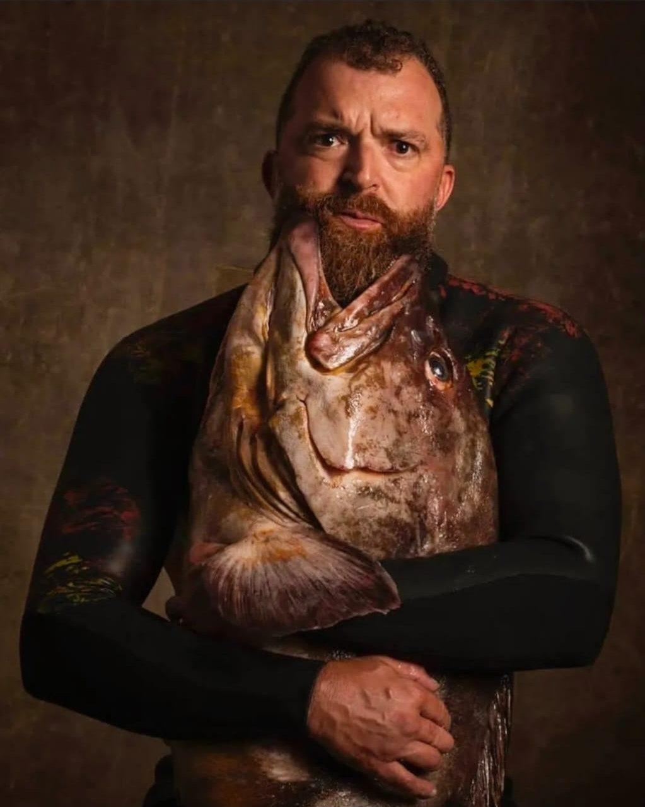
Chef Patrick San cresceu na cozinha do Restaurante Bacharel, em Cananéia, aberto pela família e o mais antigo em atividade na cidade. Estudou gastronomia no Senac e trabalhou no Squid Row, em Auckland, na Nova Zelândia, restaurante especializado em frutos do mar.
Pesca o que serve. Trabalha com as espécies do estuário do Lagamar e produz o Namazuko, ova curada de bagre branco, técnica desenvolvida por ele.
Teve como referências os chefs Alex Atala e Ivan Ralston, e o Sensei Kazuki na cozinha japonesa.
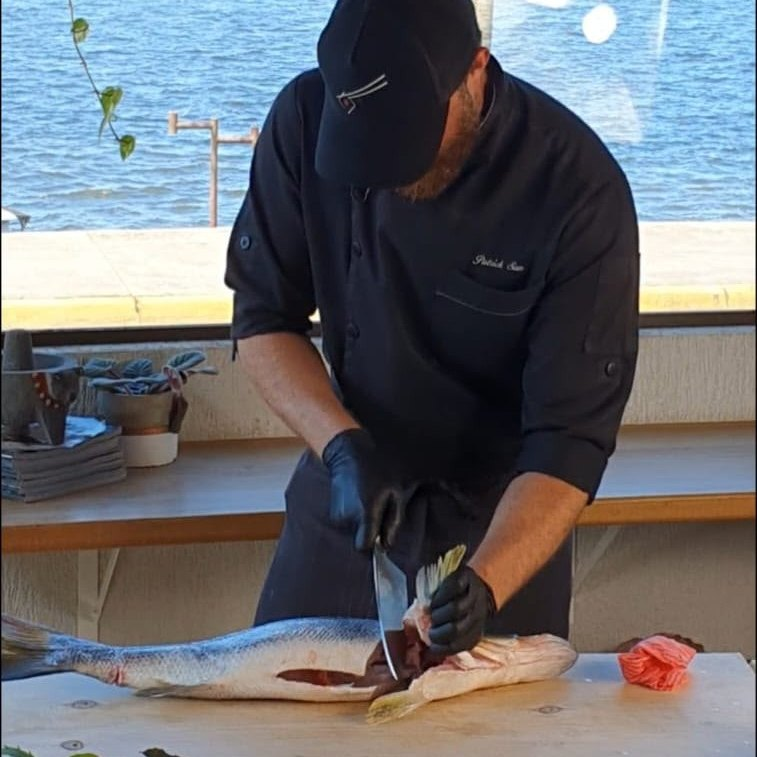
Sushis e sashimis, tanto para quem está começando quanto para quem já cozinha e quer aprimorar a técnica. Começa no peixe inteiro e avança por técnicas de corte, sashimi, sushi, preparos japoneses e pratos quentes.
Técnicas de cozinha japonesa para fazer em casa, de onde você estiver e com o peixe que tiver. O curso não depende de peixe importado nem de equipamento profissional.
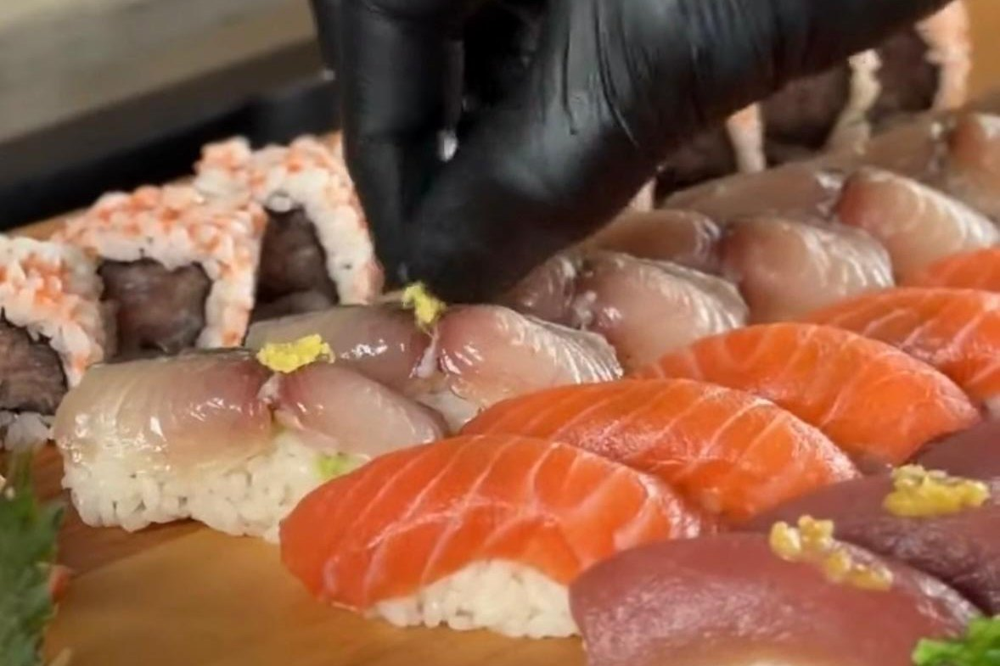
O conteúdo completo, aula por aula, está descrito na página do curso na Hotmart.
Acesso imediato após a compra · Assista quando e onde quiser
O curso foi construído para isso. Chef Patrick San ensina a avaliar e escolher pescado na peixaria ou no mercado da sua cidade, e a trabalhar com o que estiver disponível. Não é um curso sobre salmão importado.
Você não precisa ter equipamentos profissionais para começar. O curso parte do conhecimento e da técnica, mostrando como trabalhar com o que você tem disponível.
As aulas começam do peixe fechado. Você não precisa saber nada antes.
As aulas foram organizadas para acompanhar seu aprendizado passo a passo. Você pode assistir novamente às explicações e avançar no seu ritmo. Surgiu alguma dúvida durante o aprendizado? Fale com o Chef Patrick San. Ele pode orientar você e ajudar a avançar no curso.
100% de avaliações positivas na Hotmart
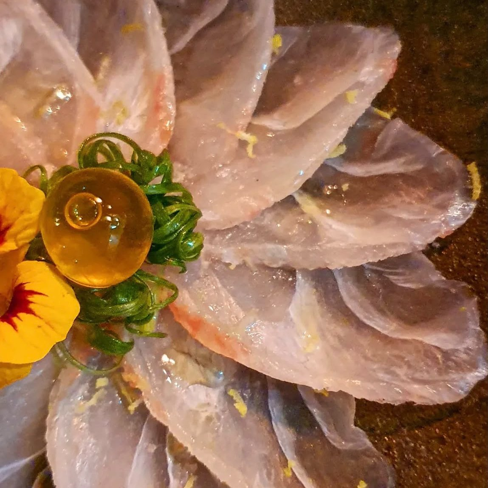
Um curso dedicado ao corte. Escolha do pescado e higiene, preparação do ambiente, escolha e limpeza das facas, manipulação e armazenamento, ângulo correto do corte e montagem do prato. Sashimi e pratos frios.
A limpeza é ensinada espécie por espécie, com a técnica específica que cada uma pede: sororoca, salmão, robalo, linguado, carapau e xareu branco.
Quero aprender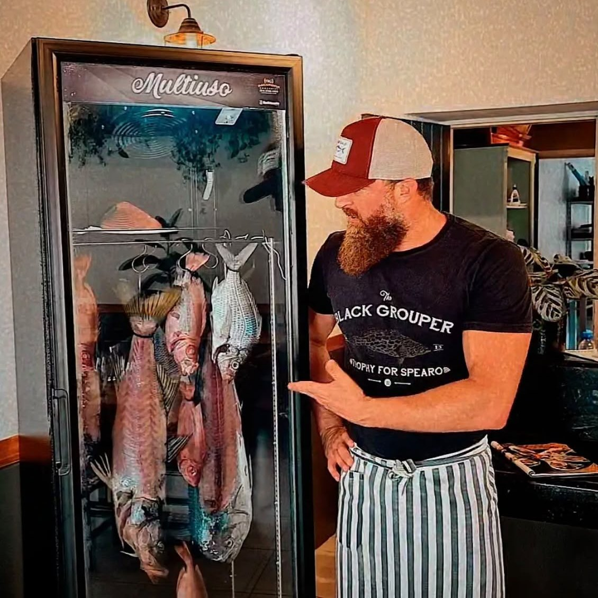
Os segredos da maturação de pescados: como montar sua câmara de maturação em casa e usufruir das possibilidades que a técnica abre.
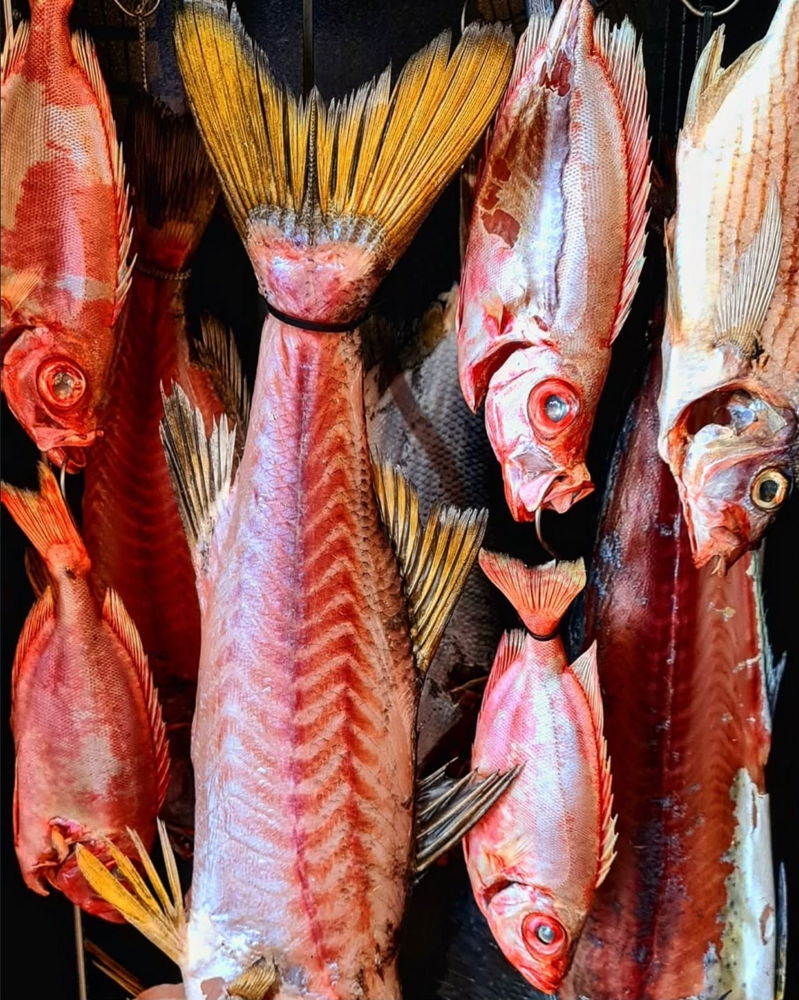
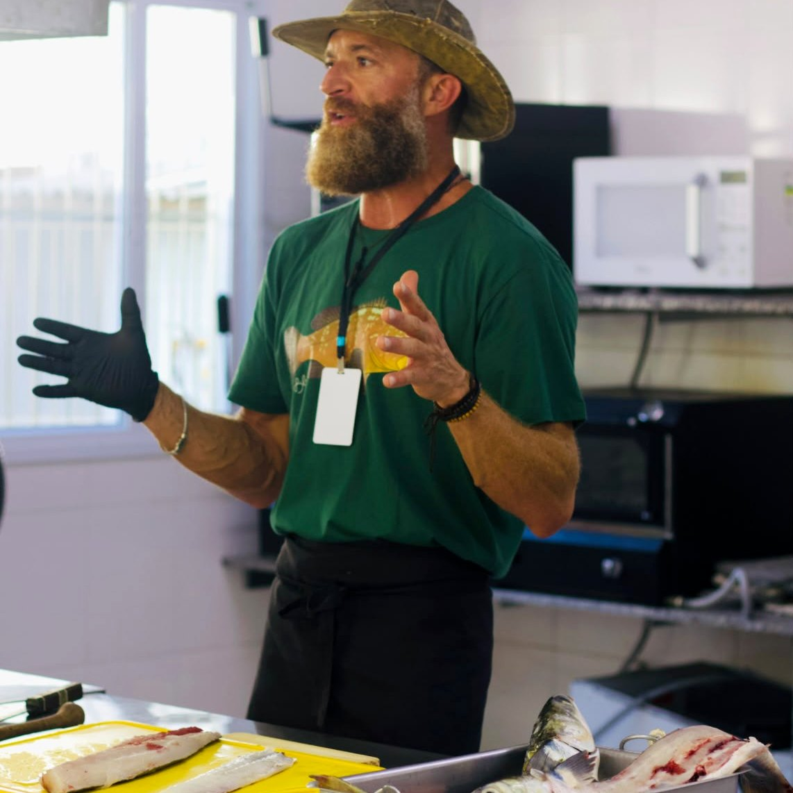
Além dos cursos gravados, Chef Patrick San atende de forma individual quem quer ir além da técnica solta e construir algo próprio. Formato e valores são definidos caso a caso, direto com ele.
Acompanhamento direto com Chef Patrick San para quem quer desenvolver técnica, cardápio ou repertório com pescado. A conversa parte do que você já faz e de onde quer chegar.
Costuma atender:
Desenho ou revisão de carta com foco em pescado: escolha de espécies, aproveitamento integral, técnicas de preparo e conservação, e a história que o cardápio conta.
Formação presencial da sua equipe em manipulação, corte e preparo de pescado, na sua cozinha.
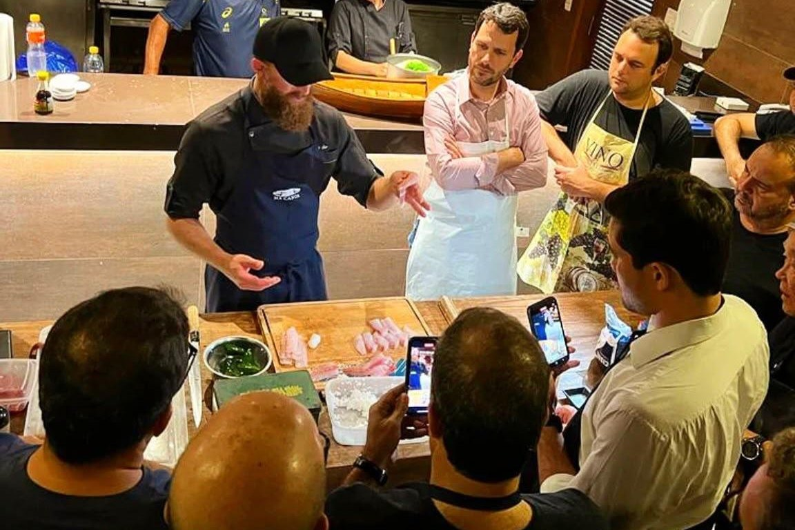
Você forma uma turma e o curso acontece na sua cidade, ou aqui no restaurante em Cananéia. Também atendemos eventos.
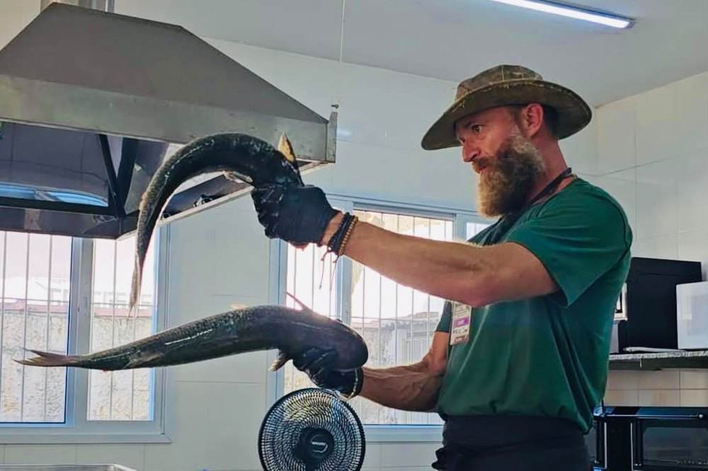
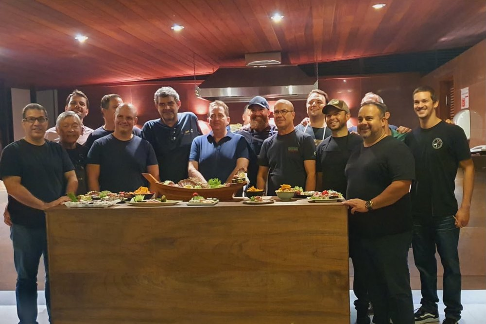
Três formas de aprender, do mais amplo ao mais específico. Todos com acesso imediato e garantia.
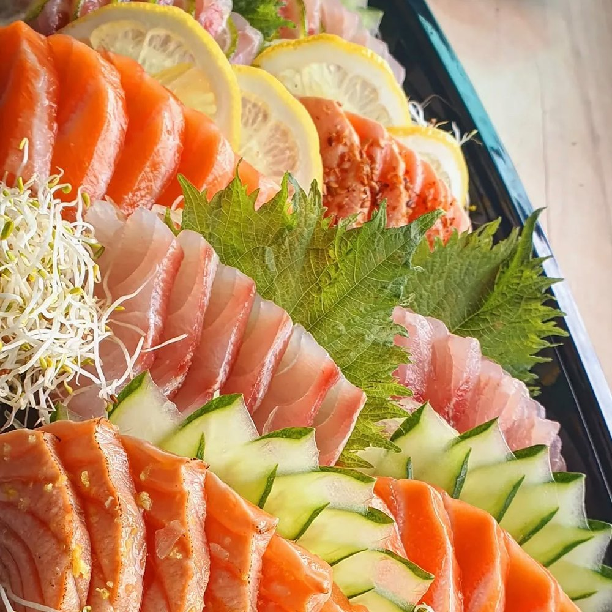
Sushis e sashimis, para quem está começando e para quem já cozinha e quer aprimorar a técnica. Do peixe inteiro às técnicas de corte, aos preparos japoneses e aos pratos quentes.
à vista, ou em até 12x no cartão · 30 dias de garantia
Quero aprender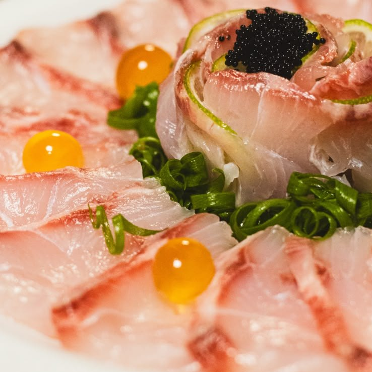
Limpeza de diversos peixes da nossa costa, com técnica específica para cada espécie. Sashimi e diversos pratos frios.
7 dias de garantia
Quero aprender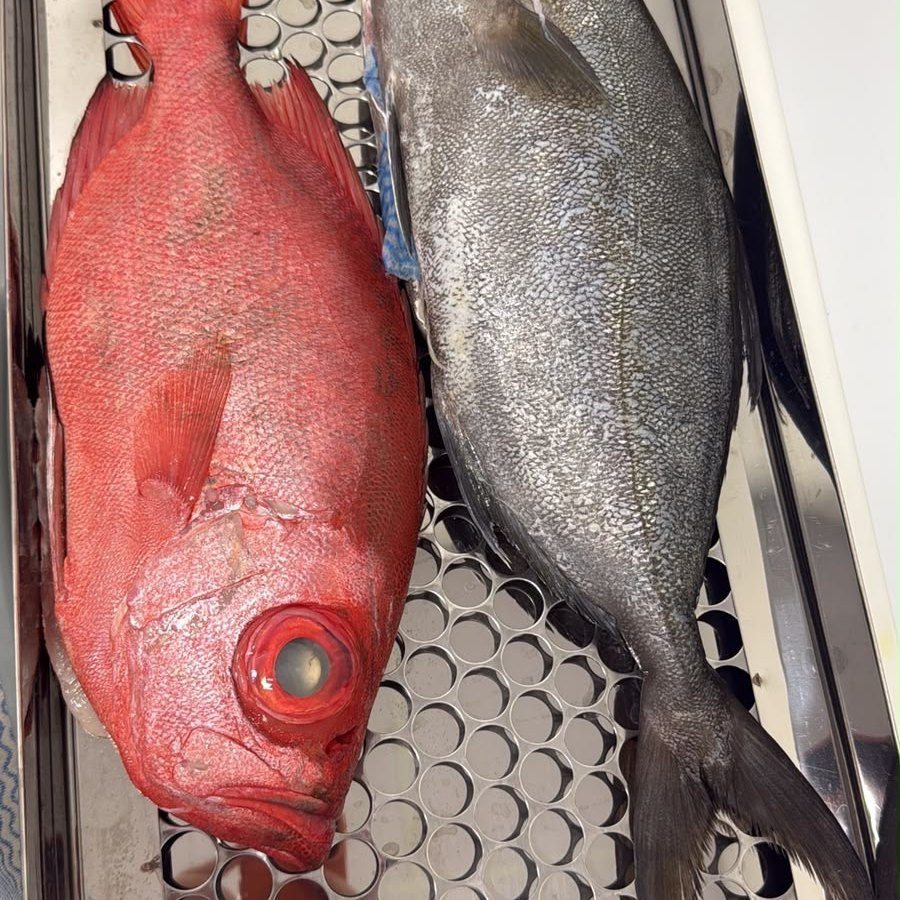
Os segredos da maturação de pescados e como montar sua câmara de maturação em casa.
7 dias de garantia
Quero aprenderFale diretamente com o Chef Patrick San pelo WhatsApp antes de escolher seu curso.
Conversar com o Chef Patrick San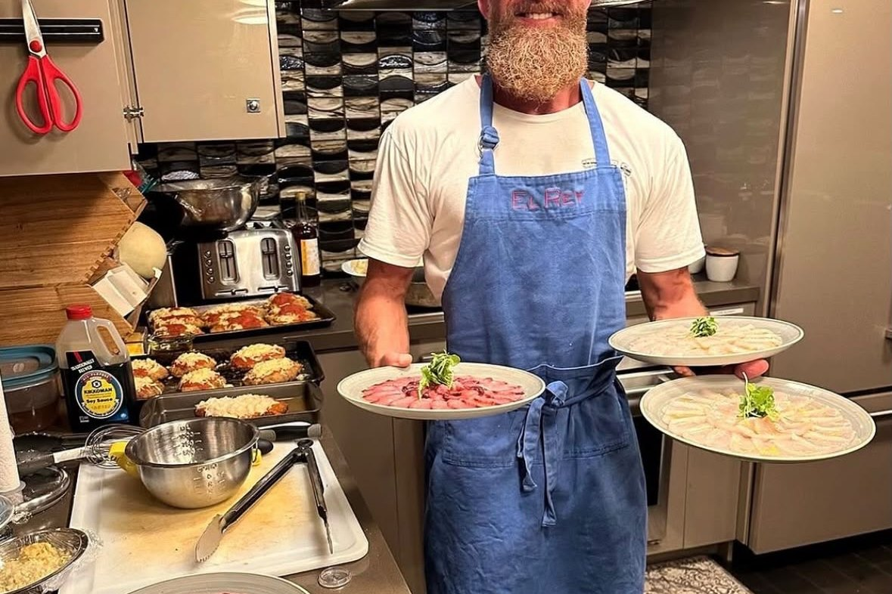
Pescar, limpar, cortar e servir o peixe é o trabalho do Chef Patrick San todos os dias. É desse trabalho que vem o que ele ensina.
Ele também cozinha por reserva no Bacharel, em Cananéia. Reservar um jantar